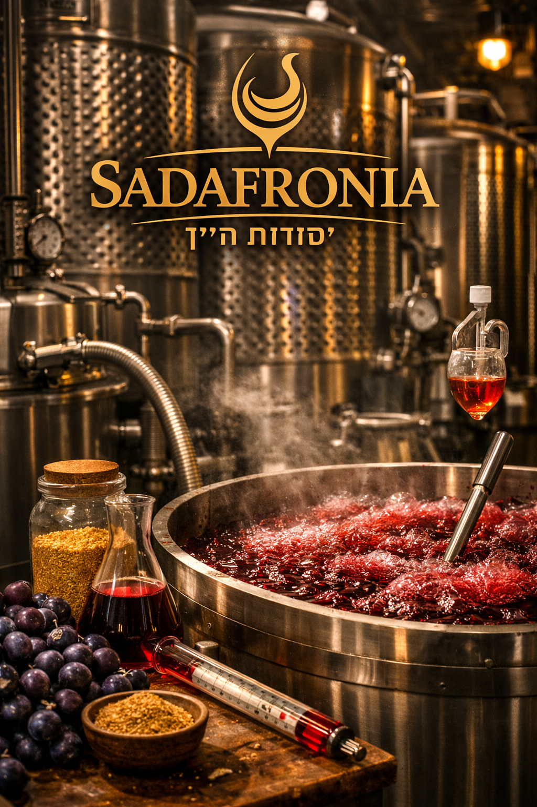
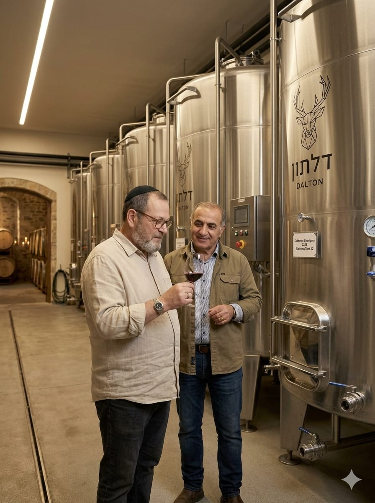
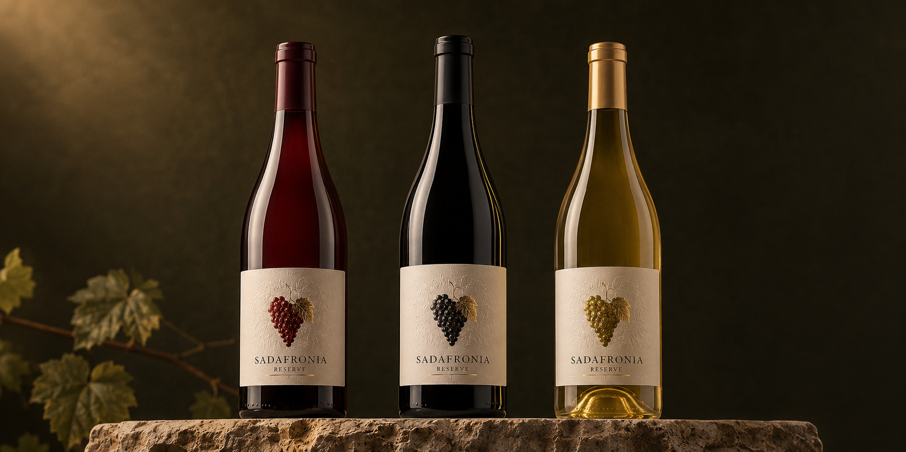

חומר גלם
בחירה מקומית, מיון מוקפד וקבלת ענבים בתנאים נכונים.

VINOTERRA · THE BOUTIQUE WINERY
יקב בוטיק בתכנון, הנשען על ניסיון של יותר משלושה עשורים ועל זהות מקומית מהרי יהודה והשפלה.
FROM VISION TO CELLAR
היקב מתוכנן כבית עבודה מדויק ליינות בכמויות קטנות. המבנה, הציוד והזרימה התפעולית נבחנים מתוך הבנה מעשית של מה שקורה באמת ביום בציר.
בחירה מקומית, מיון מוקפד וקבלת ענבים בתנאים נכונים.
שליטה בטמפרטורה, מעקב וטעימה רציפה.
חביות, מכלים וזמן — לפי הסגנון שהיין מבקש.
בקרת איכות וסגירת התהליך רק כשהיין מוכן.

PRECISION WINEMAKING

THE WINEMAKER
ממייסדי יקב דלתון, יינן ראשי במשך עשור, שש שנים ביקבי רמת הגולן וניסיון בעבודה ובליווי בארץ ובצרפת.
CONCEPT COLLECTION
מרלו, סירה, שרדונה, סוביניון בלאן, רוזה ומוסקט — קולקציית השקה מגובשת בסדרת Premium במחיר 79 ₪ לבקבוק, לצד סדרת Reserve בעיצוב אשכול הענבים במחיר 119 ₪ — ורוזה Reserve ב־99 ₪. ההדמיות מציגות את כיוון המותג לקראת ההשקה.

THE GRAPE EMBLEM SERIES
סדרת הדגל נושאת את סמל האשכול המובלט, המשתנה לפי צבע היין. אדום ולבן Reserve ב־119 ₪ לבקבוק; רוזה Reserve ב־99 ₪.
לסדרת Reserve בחנות ←יין אדום עגול וקטיפתי בסגנון אלגנטי, עם אופי פירותי ומבנה מאוזן. מתאים לארוחה, לאירוח ולמתנה.
סירה בעל עומק, תבלינים וגוף נדיב, שנבנה למנות בשר, לארוחות ארוכות ולמי שמחפש יין עם נוכחות.
שרדונה בהיר, מאוזן ורענן, עם מרקם נעים וסיומת נקייה. מתאים לדגים, גבינות, פסטה ואירוח קיצי.
לבן רענן וארומטי, בעל חומציות מדויקת ואופי עשבוני־הדרי. בחירה טבעית למנות ראשונות ולשולחן הישראלי.
יין ארומטי, פרחוני ונגיש, המשלב רעננות עם מתיקות עדינה. מתאים לאפריטיף, פירות וקינוחים קלים.
רוזה יבש ומעודן בצבע ורוד בהיר, עם פרי אדום רענן וסיומת נקייה. נועד לאירוח, לפיקניק ולמטבח ים־תיכוני.
מארז טעימה מלא הכולל מרלו, סירה, שרדונה, סוביניון בלאן, מוסקט ורוזה. מתנה מרשימה ומסע שלם בין סגנונות.

FROM THE JUDEAN HILLS · TO THE WORLD
הצטרפו לעדכוני הבציר, פתיחת בית היין, גיליונות YAYIN והאירועים הקרובים.
או בואו נתחיל שיחה אישית ←